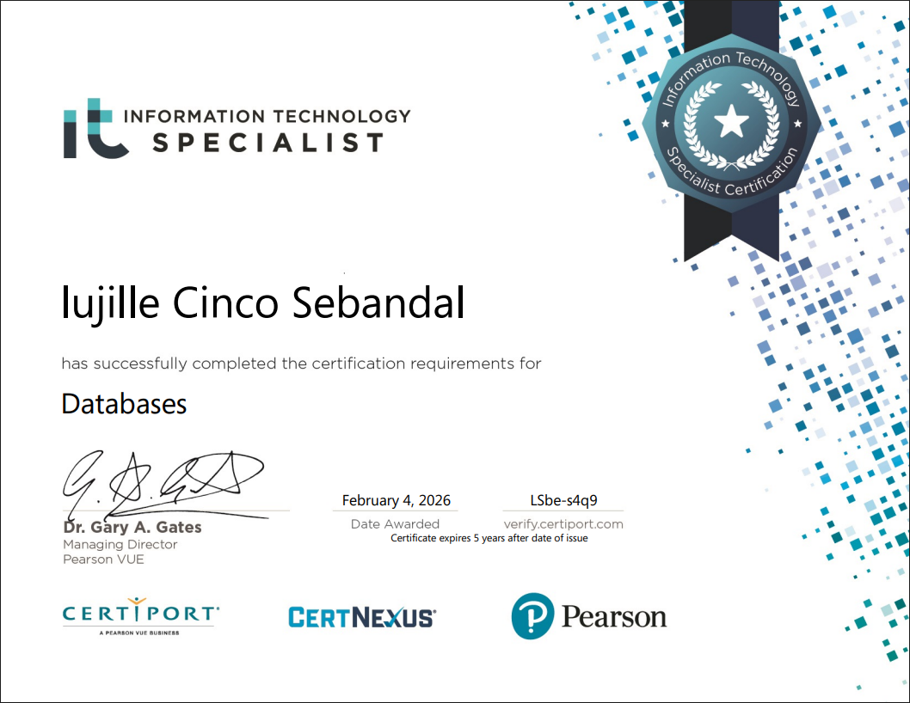

Certifications

Databases Certificate

Welcome to my personal portfolio website. Explore my projects, services, certifications.
Learn MoreI am Lujille, a Bachelor of Science in Information Technology student specializing in Mobile and Web Applications at National University Clark. As a CompTIA-certified individual, I have a strong foundation in IT fundamentals, logistics, and organizational planning. Through my experience in the Community Student Council, I developed leadership, coordination, and event management skills. I also worked as a Barista and Baker at Marguax Coffee Shop and currently operate a small business creating handcrafted flower bouquets. These experiences have strengthened my technical, organizational, entrepreneurial, and creative abilities.
Creating responsive and functional websites using modern web technologies.
Designing attractive and user-friendly website interfaces.
Creating handcrafted flowers for decorations and special occasions.

Email: lujillesebandal431@gmail.com
Phone: 0935-005-0887
Facebook: Lujille Cinco Sebandal